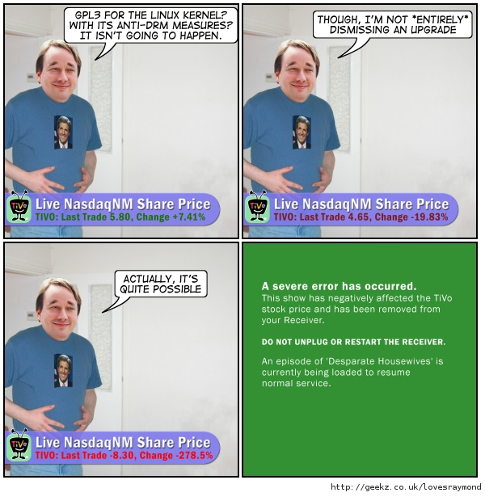

Sobre el nuevo borrador de GPL v3
Ayer se publicó el tercer borrador de la licencia GPL3:
Ha habido muchos juicios a través de los años que han añadido interpretación a las leyes de las cuales depende la GPL2. A medida que la ley cambia, la GPL debe cambiar para mantenerse a la misma altura, o se volverá obsoleta.
Este post es algo largo, si no tenés mucho tiempo para leerlo te recomiendo que salntes al final, a la sección: Palabras de Linus.
Despejando el FUD contra la GPL3
Por Bruce Perens (original - traducción)
Se ha hablado mucho de la 3ra versión de la GPL: que si va demasiado lejos como para ser admisible en los negocios, que si los desarrolladores del kernel Linux algún día se cambiarán a ésta, que si nuestra comunidad se dividirá o se producirá malestar en ella debido a esto.
Muchos de esos comentarios están basados en un pobre entendimiento de los términos de la GPL3 y, con el inminente lanzamiento de la nueva licencia, es tiempo de aclararlos.
Los confundidos opositores de la GPL3 dicen que ésta no permitirá que el Linux kernel sea usado en sistemas que implementen DRM, y que la GPL3 forzará a los fabricantes a "entregar sus llaves". Si Linus Torvalds y los desarrolladores del kernel todavía creen esto, están equivocados.
El propósito de la GPL3 (y de muchas otras licencias de software libre) es el de dar el derecho de modificar cualquier software cubierto por esta licencia. La GPL versión 3 se esmera más que otras licencias para asegurarse que este derecho funcione con sistemas embebidos. Lo que esencialmente hace es intercambiar a los creadores esos sistemas el derecho de manipular sus recursos en nuestro gran software GPL a cambio del derecho del consumidor de hacer que ese hardware corra programas nuevos e innovadores que no fueron previstos por su fabricante, o sea, que sí se puedan instalar modificaciones.
La GPL3 no prohíbe el DRM y no requiere que el DRM sea poco seguro o poco confiable. Lo que sí requiere es que el DRM no rompa el software GPL o lo asegure contra modificaciones, y debe continuar funcionando si el software GPL es modificado.
Un sistema con software GPL3 y DRM deberá permitir al software GPL, el sistema operativo kernel por ejemplo, ser reemplazado. Deberá permitir que el sistema arranque luego de dicho cambio y tendrá que seguir permitiendo al sistema correr multimedia o hacer cualquier otra cosa que el DRM hiciese antes del cambio. No deberá proveer acceso al flujo de datos desencriptado y no habría necesidad de producir claves de encriptación mientras el DRM esté implementado para cumplir con los requerimientos de la GPL3.
Si el Linux kernel estuviera bajo la licencia GPL3, el fabricante estaría prohibido de usar DRM para sellar el kernel de tal forma que fuese imposible modificarlo, como hacen los Tivo. Pero eso no significa que no pueda tener DRM a prueba de balas para restringir multimedia usando Linux y GPL3 y eso no podría impedir a Tivo de usar nuevos kernels. Sólo dice donde ése DRM debe ser colocado: en cualquier lugar que pueda existir sin que le quite el derecho al usuario de cambiar el software GPL.
Si la GPL3 es aplicado al kernel de un sistema operativo, hay cuatro lugares en donde se puede colocar el DRM en ese sistema y seguir cumpliendo con la GPL3. Y esos lugares son los mejores, los más seguros y más confiables en donde poner el DRM desde un punto de vista técnico, independientemente de la licencia:
-
En el hardware.- Este sería usualmente un circuito integrado de aplicación específica o una unidad (arreglo) lógica programable que interprete flujos encriptados en aparatos de audio o video.
-
En un coprocesador.- La mayoría de los teléfonos celulares que ofrecen funciones PDA (y PDAs que contienen dispositivos wireless) tienen dos o más CPUs, generalmente un ARM9 corriendo en la interfase del usuario y las aplicaciones, y un ARM7 que ejecuta la capa de enlace de datos wireless o el conjunto de el GSM. Usted puede poner el DRM en el procesador que no está corriendo el kernel y luego el componente GPL sólo se comunica con un bien definido enlace interprocesador al CPU externo que ejecuta el DRM. Las obligaciones de la GPL no cruzan ese enlace.
-
En un kernel bajo el kernel.- Microsoft XP y Vista han usado esta arquitectura: el núcleo del sistema DRM está en un microkernel llamado "nib" que está bajo un verdadero kernel, y hospeda al verdadero kernel como el kernel hospedaría a una aplicación en modo usuario.
-
En un programa en modo usuario.- Las obligaciones de la GPL en la licencia del kernel no se transmiten a través de la interfaz de llamada al sistema desde el kernel a una aplicación hospedada por ese kernel.
Muchos han interpretado que la GPL2 siempre hizo la misma restricción en el DRM que ha sido planteada más explícitamente en la GPL3. Siempre he aconsejado a mis clientes de consultoría estratégica que hagan sus planes técnicos asumiendo que esto es así, en lugar de decidirlo en una demanda que podría salir cara. Los 4 lugares para el DRM que mencioné también se aplican para la GPL2.
Otra objeción que también se escucha frecuentemente a la GPL3 es que la "GPL2 estaba lo suficientemente bien". Pero la GPL nunca ha sido independiente, siempre ha dependido de la interpretación local de los derechos de autor y de otras leyes para que le den fuerza, y esas cosas cambian con el tiempo.
Cuando la GPL fue escrita no había web, la música salía de tocadiscos, los videos en videocasetes y en lugar del DRM, sólo había una "rudimentaria protección anticopia" de software. La aparición de microprocesadores, software, la web y medios digitales trajeron grandes cambios en la ley con muchos cambios en los derechos de autor, patentes, la naturaleza del consentimiento, contratos, licencias sin lectura previa y permisos de derechos de autor. Ha habido muchos juicios a través de los años que han añadido interpretación a las leyes de las cuales depende la GPL2. A medida que la ley cambia, la GPL debe cambiar para mantenerse a la misma altura, o se volverá obsoleta.
En el acuerdo Novell-Microsoft una laguna jurídica fue creada por los abogados de Microsoft y Novell, una tan nueva para nosotros que los dos primeros bosquejos de GPL3 no contenía las precauciones del caso para contrarrestarla. Esta experiencia muestra que GPL debe seguir creciente para poder mantenerse a flote. El estancarse en una versión con el tiempo sólo resultaría en estropear sus protecciones.
¿Y qué hay con respecto a Novell-Microsoft? ¿Habrá otra precaución para invalidar de alguna forma a la GPL3? ¿Cómo funcionará? Richard Stallman anunció el lunes 19 de marzo que la GPL3 contendrá precauciones que invalidarían el acuerdo Novell-Microsoft. Funciona así: si alguna entidad que distribuye el software dispone proteger a un grupo particular de patentes que se refieran a ese software, debe protegerlos a todos. Esto arregla el vacío legal del que se había aprovechado el acuerdo Novell-Microsoft sin ser discriminatorio o injusto.
¿Qué significa esto para Novell? Eso no evitará que ellos usen el software GPL2 existente en sus versiones actuales. Pero podrían congelarse en ambar como un ejemplo del estado de los programas a comienzos del 2007, mientras que el resto de las distribuciones de la comunidad de Software Libre y Linux avanzan al futuro. Torvalds se resiste a cambiar la licencia de Linux enseguida, pero programas críticos en sistemas Novell son de propiedad directa de la FSF: GLibC, la librería fundamental del que todo programa depende, el compilador C y otros componentes clave.
Proyectos que no son propiedad de la FSF también se cambiarán: la motivación de los programadores Open Source (código abierto) de publicar nuevo código al público es en parte dependiente de la ejecutabilidad de los términos de GPL de compartir en partes iguales, y la GPL3 ofrecerá la más continua ejecutabilidad.
La mayor parte de los proyectos de código abierto han escogido la GPL, y el paradigma de compartir en partes iguales, en lugar del sabor de la licencia BSD/Apache que es un regalo incondicional. Muchos desarrolladores simplemente dejarían de crear si no pudiesen compartir porque sentirían como si las corporaciones y las distribuciones de Linux estuvieran aprovechándose de ellos, como si fuesen empleados sin sueldos. La mayor parte de aquellos que se sientan así mudarán sus proyectos a la GPL3.
La GPL es también una muy buena licencia para negocios como MySQL, porque facilita el paradigma de la doble licencia, en donde un cliente puede pagar al creador de software en lugar de compartir cambios que el cliente le hace al software. Esté seguro que esas compañías y proyectos se cambiarán a la GPL3 una vez que hayan estudiado la nueva versión.
¿Pero cómo puede el proyecto del kernel Linux, con sus miles de desarrolladores, cambiar su licencia? Ni siquiera podemos llegar a todos ellos, algunos están muertos y sus estados no diferencian entre una licencia de software y una de conducir. Pero cambiar la licencia es más fácil de lo que la gente piensa.
Primero, no es un cambio fundamental: la intención de la GPL3 es la misma que la de la GPL2, el cambio está en la implementación. Dado esto, lo que se necesitaría para tal cambio seria que Torvalds publicara sus intenciones de comenzar a sacar lanzamientos con la nueva licencia, algo así como un aviso legal. Un grupo de gente objetaría y tendrían derecho a exigir que sus contribuciones fueran removidas del nuevo lanzamiento. El equipo de kernel nunca se ha resistido a reemplazar código cuando ha sido necesario, y nunca se ha tardado en hacerlo sin importar cuan grande fuera la parte a ser reemplazada. Sólo vean el reemplazo de Bitkeeper por "git", una tarea muy grande para el equipo de reescritura, y aún así estuvo funcionando en 5 semanas. Así que, el código que pertenezca a la gente que está en contra de la GPL3 podría ser fácilmente reemplazado.
Luego que haya pasado un tiempo, el lanzamiento saldría bajo la nueva licencia y la vida seguiría. Hay precedentes de esto, ya que Torvald ha hecho dos cambios significativos al preludio de la GPL2 en el kernel, publicando sus intenciones y luego lanzándolo.
¿Pero el equipo de kernel algún día se cambiará a la GPL3? Linus Torvalds y algunos otros miembros del equipo kernel no les gusta hoy la GPL3. Pero, como lo expliqué más arriba, sus razones para no agradarles esta licencia podrían no ser válidas. En cuanto a Torvalds hay que reconocerle algo: cuando se equivoca se le puede convencer de aquello eventualmente. Pero a veces eso toma años. Guiándonos por su historia, creo que podríamos esperar uno o dos años para ver al equipo de kernel dignarse a cambiar a la GPL3. Inclusive si no lo hacen, muchos proyectos importantes se cambiarán a la GPL3 que de seguro será un factor importante en el futuro en nuestras vidas.
Comic

Palabras de Linus
Original en inglés y un poco más largo.
Linus Torvalds, lider del proyecto Linux (kernel) y una de los más importantes desarrolladores de la comunidad del Software Libre dijo el miércoles que está bastante complacido con los cambios en tercer borrador de la GPL3.
El kernel Linux y muchos otros paquetes de software de más alto nivel se encuentra licenciados con la licencia GPL2. Torvalds se ha expresado fuertemente en contra de versiones previas del borrador de la GPL3, algunas de estas críticas parecen haberse ido o almenos moderado.
En realidad estoy muy complacido. No porque piense que es perfecta, simplemente por que pienso que ciertamente es mucho mejor de lo que yo esperaba de los borradores anteriores.
De hecho es mejor licencia que la GPL2, estoy todavía un poco escéptico, pero por lo menos estoy así en lugar de con un "Dios, no!".
Estoy mucho más contento con muchas partes del borrador. Pienso que se lee mejor, y algunos de los peores horrores fueron eliminados completamente.
El borrador actual me hace pensar que es al menos posible en teoría, pero si es práctico y vale la pena es una cosa totalmente diferente. Hablando en términos prácticos, requeriría mucho trabajo asegurarse de que todo lo relevante es GPL3-compatible incluso si decidimos que la GPL3 está bien.
Este no lo traduzco por miedo a que se pierda el significado:
The 'we control not just the software, but also the hardware it runs on' parts still drive me up the wall because I think they are so fundamentally broken. But the new draft at least limits it to a much saner subset and makes it clearer too.
Lecturas de verano
Hoy 21 de marzo se termina el verano. Este fue un buen verano. Fue el verano en que más tiempo libre me dejó la facu y creo que fue uno de los que más disfruté. Entre las cosas que tuve oportunidad de hacer, estuvo leer.
En el post trato de reseñar/comentar/recordar algunos libros que leí este verano. Me refiero a libros de entretenimiento.
Título: La bruja de Portobello
Autor: Paulo Coelho
Origen: regalo de Ceci por mi cumple nº 22.
Señalador: una pluma blanca ;-)
Aprovecho este espacio para contarles algo: leí todos los libros de este autor brasileño, al menos todos los que son de difusión masiva (tiene un mar no-muy-publicados/que-no-lo-enorgullecen). ¿Y que encuentro de fascinante en este autor? Tal vez nada en especial, no consumo libros de auto ayuda (ni considero su obra en este género, aunque así lo hagan las librerías) pero desde que leí El Alquimista cuando estaba en la secundaria, un verano, acostado en cama me enamoré de su estilo. Me gustan las historias que cuenta. Al pastor Santiago le siguió (en mi lectura) le siguió un aprendiz de mago que tenía que recorrer el camino de Santiago para recuperar su espada. El Peregrino (diario de un mago) fue de todos el que más me gustó. El que menos fue Once minutos.
Título: Harry Potter y la Orden del Fenix
Autora: J.K. Rowling
Origen: biblioteca de mi escuela secundaria.
Señalador: un pedacito de cartón.
Una vez había leído que los libros de Harry Poter eran cada vez más obscuros. Creo que no lo entendí hasta que leí este libro. La historia deja de ser el inocente libro 1 para chicos de 12 años (que yo.. ejem.. leí a los 21), los lectores crecen y así también lo hace Harry, lo que le permite enfrentar nuevos y mayores peligros a la vez que se revelan secretos y escalofriantes misterios.
De los 6 libros que leí, este fue el que más me gustó. El que le sigue en gusto fue el tercero (El prisionero de Azkaban). Según la autora, su favorito es el séptimo (aún no publicado) :)
Este libro ya me sirvió de inspiración para un pasado post: La orden del fenix.
Título: Un Lápiz en las manos de Dios (Vida de la Madre Teresa)
Autora: Franca Zambonini
Origen: Me lo prestó mi mamá.
Señalador: Un sobrecito que nos daban en el casamiento de mi amigo Adrián para saber dónde nos teníamos que sentar.
Lindo libro para leer, logra contar algo general (la vida de una persona) mediante relatos particulares, cosas concretas. Si lo consiguen les recomiendo leer un capítulo por día, por ejemplo a la mañana. Puede ayudarlos a vivir diferente ese día.
Título: El estilo HP (Cómo Bill Hewlett y yo creamos nuestra empresa)
Autor: David Packard
Origen: lo compré en un kiosco cuando lo vi, es parte de una colección de La Nación llamada Grandes Casos Empresariales.
Señalador: Un rectángulo de papel blanco :D Nada muy extraordinario puedo decir sobre este.
Sobre este también ya estuve contando en el blog: Estilo HP.
Título: El monstruo subatómico
Autor: Isaac Asimov
Origen: me lo prestó César.
Señalador: este sí tenía un señalador propiamente dicho, uno de esos de verdad.
Creo que su lectura me acercó más a el culto que hay con este autor. Es un ejemplo de su variada obra, ya que no solo escribió ciencia ficción. También, entre otras cosas, escribió libros de divulgación científica. Este libro es un ejemplo de ello. El libro está dividido en varias secciones: Física, Astronomía, Química, Tecnología y Cronología. Dentro de cada una va tocando distintos temas, casi siempre con un título gracioso o llamativo, una introducción al tema en la que deja ver fragmentos de su vida (esto hace las delicias de sus fans) y luego desarrolla el tema en cuestión, siempre haciendo mucho énfasis en los datos históricos de los mismos: ¿quién? ¿cuándo? ¿dónde?
Título: Si Harry Potter dirigiera General Electrics
Autor: Tom Morris (filósofo)
Origen: regalo de mi amigo Joel. También por mi cumple y a contra-pedido.
Señalador: Un almanaque. Bueno, de un lado es un almanaque y del otro hay una fotografía y sobre esta está escrito "La única lucha que se pierde es la que se abandona.".
El libro compara actitudes y valores de los habitantes de Howarts (la escuela dónde estudia Harry Potter, dirigida por Dumblendor) con los adecuados para dirigir una gran empresa. Por ejemplo, uno de los capítulos se llama Dumblendor, director ejecutivo :)
Es un libro para leer con atención, e incluso releer.
Título: Ud no me lo va a creer y otros cuentos
Autor: Roberto "El Negro" Fontanarrosa
Origen: tenía que cambiar un libro que me habían regalado para el cumple por que ya lo tenía. Después de mucho revolver en Mauro Yardín sobre la peatonal, me decidí por llevarme un libro de Fontanarrosa pagando una diferencia mínima. En una mesa había muchos libros de él que parecían ser parte de una colección, de una edición más bien. Como nunca leí nada suyo (ni siquiera Inidoro Pereyra) me sentía desarmado para hacer una buena elección, por lo que decidí preguntarle a un joven que allí trabajaba.
--¿Cuál será el mejor de estos libros de Fontanarrosa?-- indagué con aire taciturno.
--Mmm mirá..-- amagó a irse a preguntar, volvió, pensó. --Los libros de Fontanarrosa no son muy buenos.
Menos mal que no hice caso a la falta de paladar literario del vendedor! Me llevé Ud no me lo va a creer y otros cuentos y la verdad es que me encantó, un montón de cuentos muy divertidos con un estilo que me muy seductor, mis recomendados extraídos del índice del libro:
<li>Julito: una historia sobre la relatividad de lo bueno y lo malo en el seno de una familia humilde.</li> <li>Mi amigo Mickey: la relación Argentina - EEUU en un encuentro casual esperando un avión.</li> <li>Clase de modelo vivo: imperdible relato sobre el gusto en cultivar el arte de algunas personas.</li> <li>Una noche en lo de Nela y el Gordo: análisis pormenorizado de la vida conyugal a los ojos de 2 terceros (un tercero y un cuarto?).</li>
Nada más, mi lista original era más extensa pero de todos estos son los que más me divirtieron (Ojo, me falta leer algunos).
Señalador: No necesité usar, cada vez que agarraba el libro leía un cuento (o más) de cabo a rabo.
Bonus track: hace poco calló también en mis manos otro libro del mismo autor, El mundo ha vivido equivocado y otros cuentos.
Título: Harry Potter y el Principe Mestizo
Autora: J.K. Rowling
Origen: después de leer La Orden del Fenix no veía la hora de poder leer el siguiente libro de la historia. En febrero cuando la biblioteca de mi ecuela abrió la puertas lo saqué y me lo llevé a Santa Fe.
Señalador: uno largo (sobre sale del libro) que de un lado es turquesa y del otro negro. Está bueno que tenga dos colores, así cuando dejás el libro a mitad de un capítulo podés, a la vuelta, saber en cual de las 2 páginas tenés que seguir leyendo (previamente te tenés que haber puesto de acuerdo con vos mismo acerca de que lado del señalador iba a indicar eso).¿Leyeron alguno de estos libros? ¿Qué les parecieron? ¿Y a los autores?Nos seguimos leyendo y.. Feliz Otoño!
Tarball diario de Life Fighter
Puede obtenerse diariamente un tarball (un paquete conteniendo todos los archivos fuentes en su última versión) del juego Life Fighter desde: http://juanjoconti.com.ar/files/fighter/life-fighter-svn.tgz
LF Tarball: Siempre recién sacado del horno.
Boletín de anuncios de Fundación Vía Libre
Hoy empezó la publicación de un boletín de anuncios de FVL:
Marzo siempre es un buen mes para comenzar actividades nuevas. Así que desde hoy, y con esta edición #0, Vía Libre pone en marcha su lista de anuncios y el boletín mensual para mantener informada a la comunidad de usuarios de tecnología de información, especialmente a la comunidad de Software Libre y a otros interesados sobre las actividades, proyectos yacciones de activismo que realizamos. El boletín será publicado regularmente los días 15 de cada mes, mientras que también utilizaremos la lista de anuncios para difundir información, invitaciones y
gacetillas de prensa.
Podés subscribirte aquí: https://mail.vialibre.org.ar/cgi-bin/mailman/listinfo/anuncios
Y podés saber más sobre FVL en la sección ¿Qué hacemos? de su sitio web.
Un nuevo planeta
No, no. No se trata de atronomía. En la blogósfera un planeta a una agregación de blogs que tratan sobre un tema en común. Por ejemplo, es muy común en los proyectos grandes de Software Libre que exista una planeta del mismo. En este se pueden encontrar las entradas más recientes los los blogs de los desarrolladores del mismo.
Todos los planetas que visite usan un software escrito en Python llamado Planet. Tenía ganas de probarlo así que ayer a la tarde bajé la versión 2.0 (primer release oficial) y lo instalé en blogs.firebirds.com.ar (a falta de un mejor dominio).
Tiene un archivo de configuración en el qeu se deben agregar las direcciones de los feeds que se quiere reunir en el planeta y ejecutando unprograma (.py) se crea una página index.html estática a partir de un template llamado index.html.tmpl y varios archivos xml también a partir de sus propios templates (archivos .xml.tmpl).
Queremos que esta ejecución de lleve a cabo cada cierto tiempo, para que index.html se vaya actualizando. Para esto se agrega una entrada en el crontab.
[squirt]$ crontab -l
*/15 * * * * /home/jjconti/blogs.firebirds.com.ar/planet.sh > /dev/null 2>&1
Esa línea ejecuta cada 15 minutos el script planet.sh y redirije tanto su salida estándar como su error estándar a /dev/null para que no la veamos (recibamos por mail dentro del sistema). [1]
Fácil y rápido el sitio quedó andando. Le cambié el logo por defecto por uno qeu hice en 5' en el GIMP (a falta de uno mejor) y le cargué los feeds de algunos amigos en Santa Fe.
Ahora que? Bueno, vamos a dejar el sitio en línea. A falta de un mejor nombre (e imaginación) bauticé el planeta como Computadoras en Santa Fe, un nombre que ciertamente es bastante malo. Se aceptan sugerencias para un nombre mejor (y para todo lo señalado como a falta de uno mejor). Gracias.
Por último: si sos de Santa Fe, tenés un blog, en el escribís sobre software, computadoras y la vida misma (no es necesario que exclusivamente) y tenés ganas de ser un habitante más de este nuevo planeta, mandame un mail con la dirección de feed (rss o atom) de tu blog y te agrago! Esto último define el target del planeta.
[1] El paquete viene con buena documentación + la documentación embebida en el archivo de confuración que nos explica para que es cada variable que tenemos que llenar. BonusTrack: si tu hosting está en DreamHost no dejés de leer: http://wiki.dreamhost.com/index.php/Planet
Esto es para mi caso en particular pero también puede servirle a alguien:
<li><a href="http://blogs.firebirds.com.ar/planet.sh" target="_blank">planet.sh</a></li> <li><a href="http://blogs.firebirds.com.ar/fancy/config.ini">config.ini</a></li>
Carta Abierta a Steve Jobs para detener los DRM
En http://www.defectivebydesign.org/actions/open_letter/steve_jobs pueden firmar una carta para pedirle a Steve Jobs (uno de los fundadores de Apple) que lleve a cabo acciones concretas para demostrar su postura en contra de los DRM (Restricción Digital de Derechos).
Esta carta (que ya han firmado más de 3000 personas y seguirá siendo firmada hasta el 1º de abril) es una respuesta a Pensamientos sobre la Música (un reciente texto de Steve) y es impulsada mediante DefectiveByDesign.org (una campaña de la FSF).

{kind=link}
Anoche estaba preparando este post, pero no me gustó lo que había escrito y vencido por el sueño me fuí a dormir. Hoy leo en la lista del LUGLi un mail de mi amigo Mariano muy claro sobre el asunto:
Hace ya un tiempo un grupo de activista (http://www.defectivebydesign.org) esta llevando a cabo una campa?a en contra del DRM. DRM (Digital Rights Management) es un sistema por el cual se intenta controlar el uso de datos (musica, videos, documentos, ect) y hardware que obviamente limita la libertad y tiene por objetivo hacer mas poderosos a los poderosos. Como algunos sabran hace tres semanas Steve Jobs hizo unas declaraciones diciendo que podria abolir el drm en los ipod. Por esta razon estos activistas proponen enviarle una carta abierta para que cumpla sus palabras y no sea solo una forma de quedar bien con los que defendemos la libertad. Sumate y firma la carta. http://www.defectivebydesign.org/actions/open_letter/steve_jobs
Concretamente lo que se le pide a Steve Jobs es que demuester públicamente que sus palabras no están vacías. Estas 3 cosas se le piden en la carta:
1) Permitir que artista independientes y firmas que así lo quieran distribuyan sus canciones sin DRM mediante iTunes.
2) No solo música: vender las películas de Disney sin DRM. Tiene el poder para hacerlo, ya que al vender Pixar a la empresa de Mickey Mouse, se convirtió en su mayor accionista y miembro de la mesa directiva.
3) Tomar una postura pública contar los DRM y llevar a cabo una campaña mundial en contra de DMCA. Tiene el dinero y los contactos necesarios para poder hacerlo.
You have the direct power to do this.
Y vos..? Ya firmaste? Qué esperás?
Revolution OS en I-Sat
En Marzo I-Sat va a estar pasando el documental Revolution OS.
Para los que no lo vieron: Revolution OS cuenta desde adentro la historia de los hackers que se rebelaron en contra del modelo propietario de Microsoft y crearon el Sistema Operativo GNU/Linux y el movimiento del Software Libre.
Estos son los días/horarios para Argentina, para otros países pueden buscarlos en el sitio web del canal.
14 de marzo - 00:05 hs (tienen que juntarse a verla el 13 a la noche)
16 de marzo - 19:10 hs
24 de marzo - 10:10 hs
Es una buena introducción al tema, ideal para ver con familiares y amigos!
El juego del verano
Life Fighter es un juego de tablero, de estrategia, desarrollado en Python haciendo uso de PyGame, que estuve pensando y pogramando este verano. Del 10 al 20 de diciembre, del5 al 15 de enero y ahora estoy volviendo a trabajar en él.
Me cansé de trabajar solo, así que escupí todo lo que tenía a Internet. Voy a tener que ir organizándolo un poco estos días. Pero ya está, está ahí. No está ya más solo en mi frágil computadora.
"Only wimps use tape backup: real men just upload their important stuff on ftp, and let the rest of the world mirror it."-- Linus Torvalds
Todavía no hay ningún paquete listo para instalar, pero pueden bajar el código fuente desde el servidor svn:
svn checkout https://life-fighter.googlecode.com/svn/trunk/ life-fighter --username usuario
dónde usuario es el de su google account. También van a necesitar una password
o anónimamente:
svn checkout http://life-fighter.googlecode.com/svn/trunk/ life-fighter
(sólo se necesita tener instalado Python --estoy usando la version 2.4-- y PyGame pero si tienen algún problema mandenme mail o dejen el comentario aca y los ayudo)
La página del proyecto en Google code: http://code.google.com/p/life-fighter/
Licencia: GPL 2.0
Espero que se lo bajen y lo prueben (como para ir entusiasmando la cosa)
Saludos
Juanjo
Problemas con la versión de wxPython al intentar iniciar SPE
SPE (Stani's Python Editor) es un Entorno de Desarrollo Integrado (IDE leyendo las siglas de atrás para adelante :-) ) libre (licenciado bajo GPL) para Python. Estaba con ganas de probarlo así que hoy lo instalé. En Debian:
apt-get install spe
Cuando intenté ejecutarlo, hubo un problema:
juanjo@sarge:~$ spe
You need to install at least wxPython v2.5.4.1 to run SPE.
Get it from http://www.wxpython.org
Pero mi versión instalada de wxPython era la 2.6.x.. en el resto del artículo: 2 formas de solucionar el problema.
Además de saber que el paquete que tenía instalado era wxpython2.6 y no wxpython2.4 (que también era un candidato), comprobé la versión que tenía instalada desde el intérprete interactivo de Python:
>>> import wxPython >>> dir(wxPython) ['__builtins__', '__doc__', '__file__', '__name__', '__path__', '__version__', '_controls', '_core', '_gdi', '_misc', '_windows', '_wx', 'wx'] >>> wxPython.__version__ '2.6.3.2'
Entré al canal #python de irc.freenode.org donde alguien me dijo que en las versiones viejas de SPE había un bug con el chequeo de versiones y me me convenía instalar manualmente la última versión.
svn checkout svn://svn.berlios.de/python/spe/trunk/_spe
python _spe/SPE.py
me daba el mismo error.
Cundo revisé el código de _spe/SPE.py, estas eran las primeas líneas:
import sys
try:
WX_VERSION = '2.5.4.1'
import wxversion
wxversion.ensureMinimal(WX_VERSION)
except ImportError:
print 'You need to install at least wxPython v%s to run SPE.\nGet it from http://www.wxpython.org'%WX_VERSION
sys.exit()
Solución 1
Probé importar wxversion desde un interprete de Python, no tenía el módulo y eso producía una excepción, lo que producía que se muestre ese error y se termine el programa. Comentando las líneas:
#import wxversion
#wxversion.ensureMinimal(WX_VERSION)
pude correr el programa sin problemas.
Solución 2
En realidad el problema es que el módulo wxversion no está instalado. En un momento había pasado por la página de wxPython y entre sus nuevas features había leido:
..wxPython now supports having more than one wxPython runtime installed at the same time, and provides a mechanism for choosing a non-default version at runtime if the app needs to.
El módulo wxversion sirve para hacer la selección de versión de wxPython. Por lo que la otra solución es instalar este módulo:
apt-get install python-wxversion